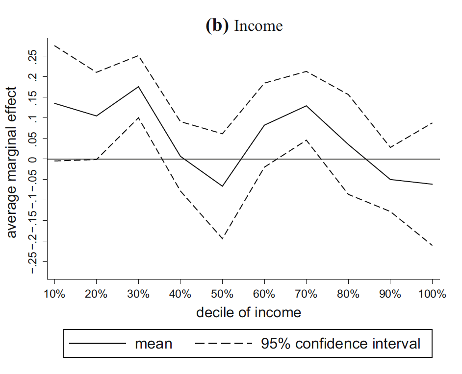

Framework for natural experimental evaluations: Launch event
2025-05-23
The common thread in most definitions is that exposure to the event or intervention of interest has not been manipulated by the researcher.
We use the term to refer to events or processes outside the control of a researcher that divide a population into exposed or unexposed groups, or groups with differing degrees of exposure.
Paul Rosenbaum in Observational Studies:
An observational study is an empiric investigation of the effects caused by a treatment, policy, or intervention in which it is not possible to assign subjects at random to treatment or control, as would be done in a controlled experiment.
For example, GRADE guidance:
In public health, where randomized studies are less common and often infeasible in comparison with other areas of health, some types of NRS may provide greater certainty than others when investigating the health effects of policy or social interventions. For example, natural experiment studies may address selection bias and confounding through designs such as ITS or regression discontinuity, which may support stronger causal inference than other observational designs such as cohort and case-control studies [45].
…some Swiss regions do have organised breast cancer programmes, while others still rely on opportunistic screening.
This ecological quasi-experimental context allows analysing the evolution of socioeconomic inequalities in mammography screening over time in the different regions.
No discussion of treatment assignment mechanism
No discussion of potential biases of the treatment effect
our results showed that organised screening programmes modified income inequalities by reducing differences towards the null.
Despite the lack of statistical significance of APRs in both groups, it suggested that organised programmes reduced the APR of income towards the null.
these programmes reversed the gap in mammography screening uptake between employed and not employed women (the latest exceeded the prevalence of employed women by 2012) and attenuated educational and income-related inequalities.
to estimate the effect of organized mammography screening programs on screening initiation in screening cantons.
Concerns about identification:
Evaluating alternative explanations by design:
we do not find clear income- or education-related gradients in screening initiation. Although we find…stronger effects of the organized programs among women with lower incomes, these gradients are rather moderate.

A definition that fails to distinguish between stronger and weaker observational designs creates confusion.
For example, designs that ‘select on unobservables’
Focus on question, design, assumptions, and inference.
sam.harper@mcgill.ca
samharper.org